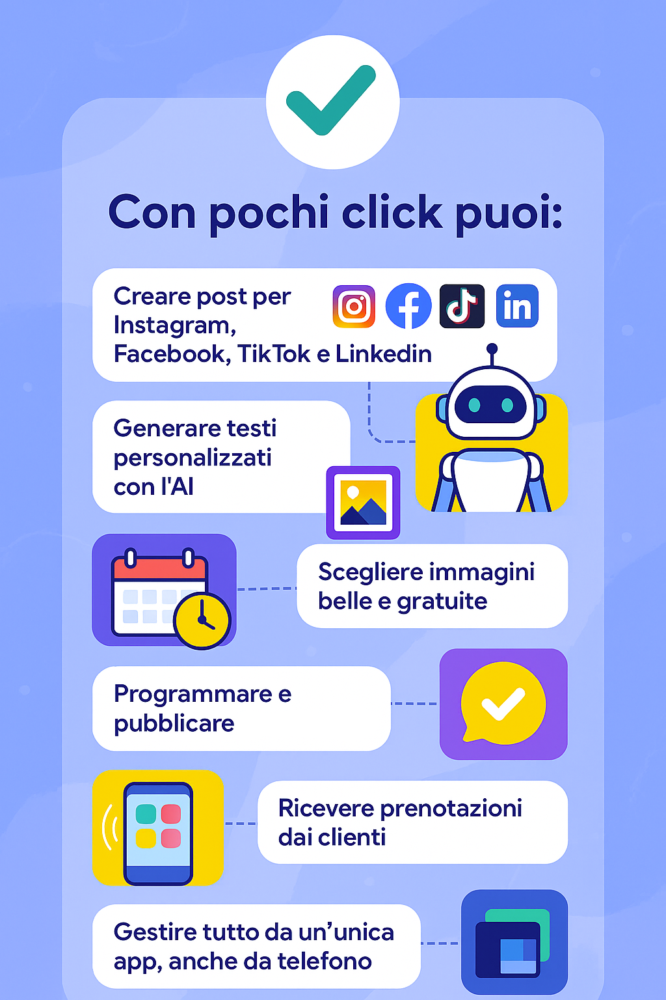
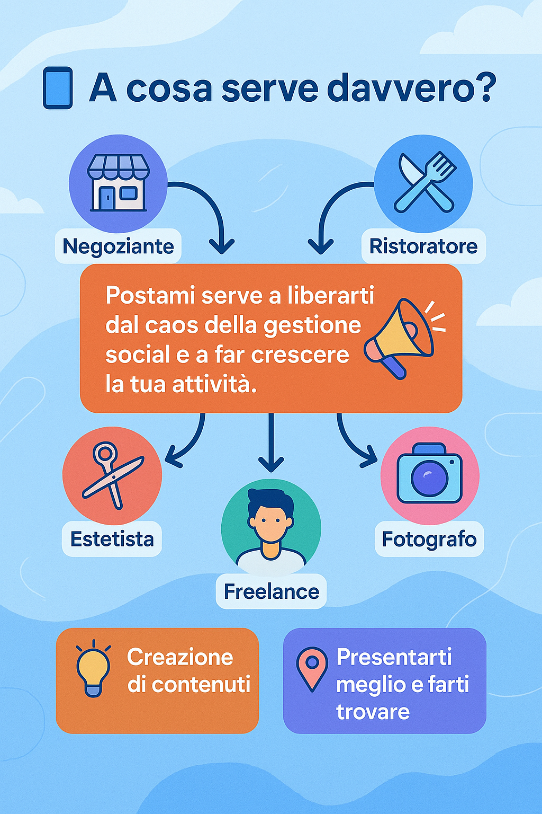
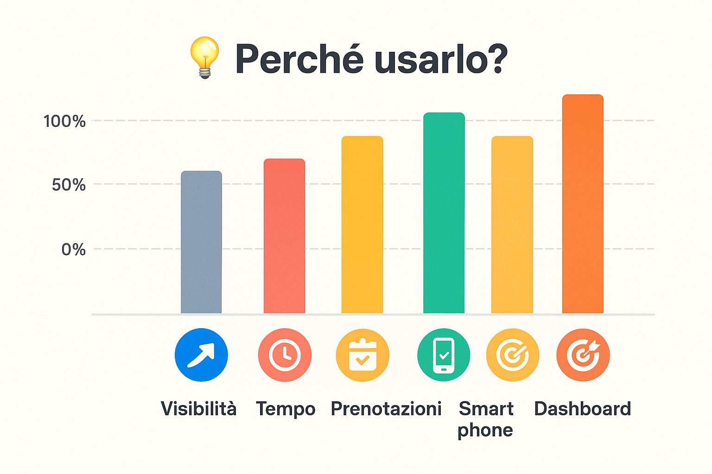
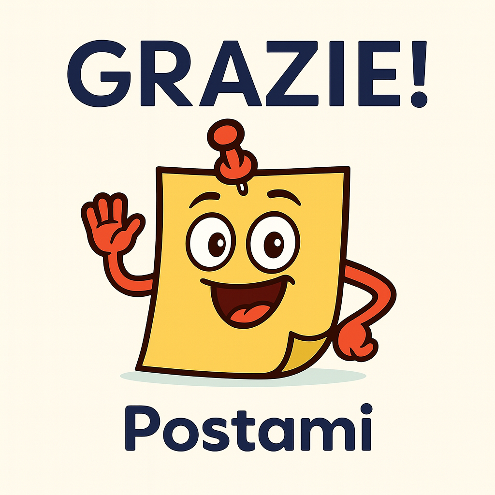

Postami è la piattaforma che ti aiuta a gestire tutta la tua comunicazione online in modo semplice, automatico e professionale.
✅ Con pochi click puoi:
Creare post per Instagram, Facebook, TikTok e LinkedIn
Generare testi personalizzati con l’AI
Scegliere immagini belle e gratuite
Programmare e pubblicare automaticamente
Ricevere prenotazioni dai clienti
Gestire tutto da un’unica app, anche da telefono

📲 A cosa serve davvero?
Postami serve a liberarti dal caos della gestione social e a far crescere la tua attività.
Che tu sia un negoziante, un ristoratore, un’estetista, un fotografo o un freelance, Postami ti accompagna nella creazione dei contenuti, ti aiuta a presentarti meglio e a farti trovare.

💡 Perché usarlo?
📈 Aumenti la visibilità fino a 4 volte
🕐 Risparmi fino al 90% del tempo nella creazione dei contenuti
📅 Gestisci più prenotazioni a settimana
📱 Fai tutto solo dal tuo smartphone
🎯 Centralizzi tutto in un’unica dashboard

🤖 Non devi essere un esperto
L’AI di Postami scrive i contenuti per te, ti suggerisce le immagini, salva le tue impostazioni aziendali e semplifica ogni passaggio.
🔁 Un sistema che si adatta a te
Postami impara dalla tua attività. Salva stile, tono di voce, obiettivi. Ogni contenuto è coerente con la tua identità.
I tuoi clienti vedranno un’azienda più organizzata, moderna e affidabile.
📌 Cosa puoi fare in concreto?
Generare post in pochi passaggi
Ricevere prenotazioni da un link personalizzato alla tua attività
Inviare promemoria, conferme e richieste recensione tramite comodi pulsanti
Organizzare tutte le informazioni in un unico spazio
Lavorare ovunque ti trovi, anche senza computer
✨ I tuoi clienti lo noteranno
Una comunicazione efficace attira attenzione.
Un sistema di prenotazione ordinato aumenta la fiducia.
Una presenza costante migliora la tua reputazione.
Postami trasforma il modo in cui ti presenti… e le persone lo percepiscono.
📊 Aumento della visibilità
Chi utilizza Postami ottiene in media fino a 4 volte più visibilità rispetto a chi gestisce i social manualmente.
🧠 Facilità di utilizzo
Senza Postami, molti utenti trovano stressante pubblicare contenuti. Con Postami tutto diventa semplice, veloce e chiaro.
📱 Gestione solo da smartphone
Postami è ottimizzato per mobile. I tuoi clienti possono lavorare ovunque, anche senza computer o strumenti complicati.
📅 Prenotazioni gestite
Con Postami aumenta l’ordine e il numero di prenotazioni grazie a reminder automatici e a una dashboard centralizzata.
⏱ Tempo risparmiato
Postami riduce il tempo di gestione dei social fino al 90%, grazie a testi automatici, immagini suggerite e pubblicazione pianificata.
💳 I Piani di Abbonamento Postami
I piani di abbonamento sono basati sul numero di social che volete gestire
Starter (gratis) – Include 1 social attivo per 2 settimane. Ideale per provare Postami senza impegno.
Minimal (€19.90/mese) – 1 social attivo, prenotazioni e accesso completo a tutte le funzionalità.
Standard (€29.90/mese) – 2 social attivi, prenotazioni e accesso completo a tutte le funzionalità.
Professional (€39.90/mese) – 3 social attivi, prenotazioni e accesso completo a tutte le funzionalità.
Business (€49.90/mese) – 4 social attivi, prenotazioni e accesso completo a tutte le funzionalità.
🙋♂️ Contattaci

Referente Angelo Di Paolo Azienda Sunflower Station - P.IVA 02136420037